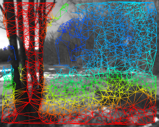
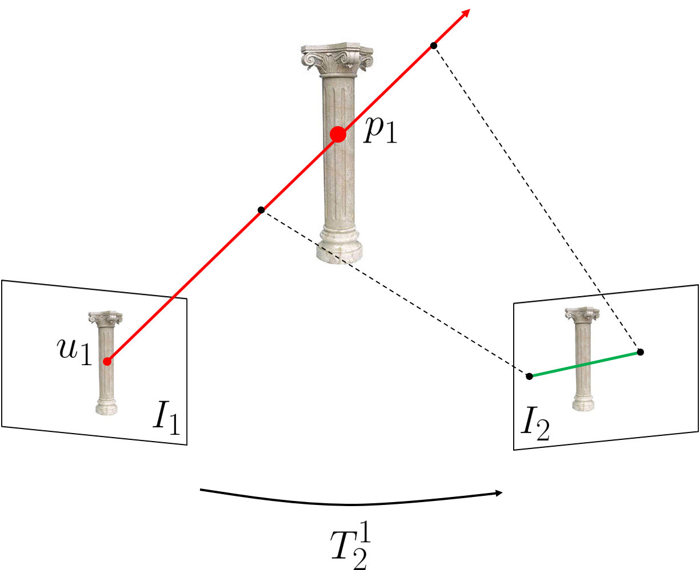

W. Nicholas Greene

I am a PhD student in the Robust Robotics Group at the MIT Computer Science and Artificial Intelligence Laboratory (CSAIL) under Professor Nicholas Roy. During my Master’s studies I was co-advised by Pete Lommel and Ted Steiner of Draper where I was a Draper Fellow.
My current research is focused on robotics, computer vision, and 3D perception, specifically developing aerial robots capable of autonomously mapping and navigating unknown environments with only onboard sensing. I’m also very interested in augmented reality, variational methods, and deep learning.
Prior to joining CSAIL, I was an Assistant Technical Staff member in the Advanced Sensor Techniques Group at MIT Lincoln Laboratory where I developed state estimation algorithms for passive sonar applications. I earned my BSE in Electrical Engineering from Princeton University in 2010.
Recent
|  | FLaME: Fast Lightweight Mesh Estimation using Variational Smoothing on Delaunay Graphs W. Nicholas Greene and Nicholas Roy ICCV 2017 [ pdf, video, slides, code ] |
|  | Real-Time Dense Simultaneous Localization and Mapping using Monocular Cameras W. Nicholas Greene SM Thesis [ pdf ] |
 | Multi-Level Mapping: Real-time Dense Monocular SLAM W. Nicholas Greene, Kyel Ok, Peter Lommel, and Nicholas Roy ICRA 2016 [ pdf, video, slides, poster ] |
 | Simultaneous Tracking and Rendering: Real-time Monocular Localization for MAVs Kyel Ok, W. Nicholas Greene, and Nicholas Roy ICRA 2016 [ pdf, video ] |